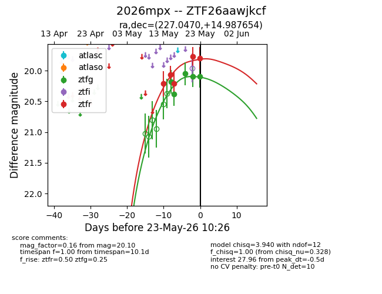
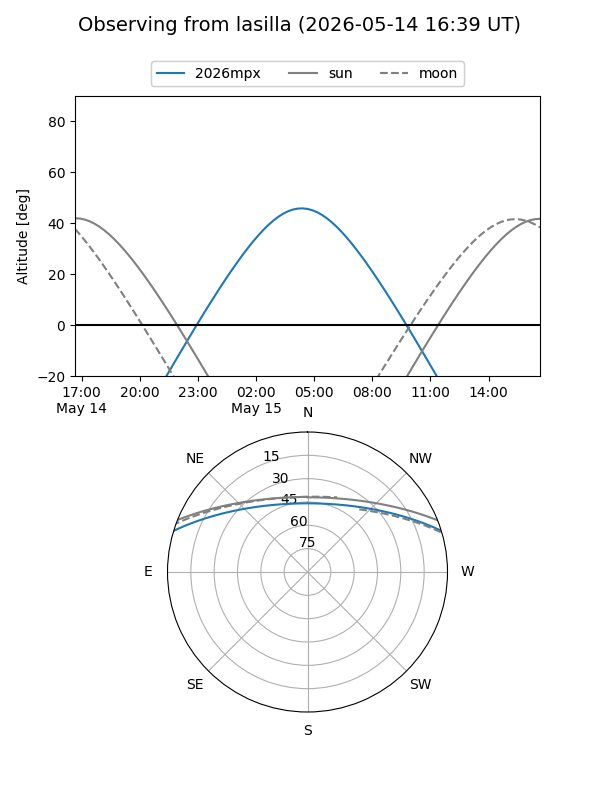
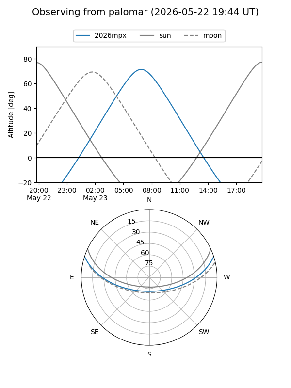
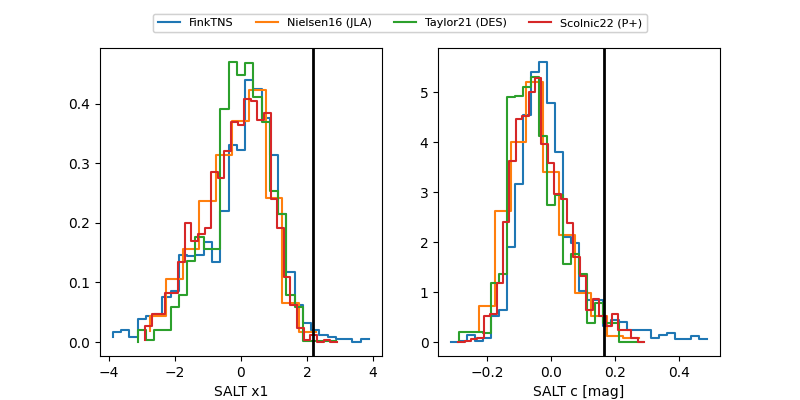

2026mpx
Target 2026mpx at 2026-05-23 10:27
Aliases and brokers:
lsst-FINK: link
lsst-Lasair: link
lsst-ALeRCE: link
ztf-FINK: link
ztf-Lasair: link
ztf-ALeRCE: link
TNS: link
YSE: link
alt names
ZTF26aawjkcf (ztf,fink_ztf)
2026mpx (tns,yse)
Coordinates:
equatorial (ra, dec) = 227.0470,+14.98765
equatorial (HMS+DMS) = 15:08:11.27,+14:59:15.56
galactic (l, b) = (19.0446,+56.00424)
Flags:
Photometry:
last ztfg=20.10, ztfr=19.80
5 ztfg, 5 ztfr detections
Lightcurve

Visibility


Additional plots
